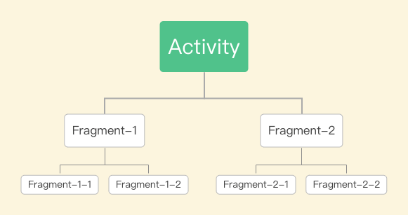
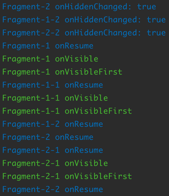
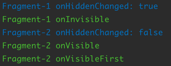
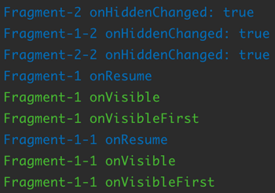
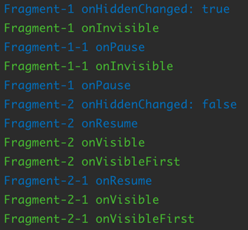

Fragment 有很多种使用方法，官方并没有提供一个统一的 api 来处理 Fragment 的可见性判断和回调，导致在不同的使用场景下需要使用不同的方法来判断 Fragment 的可见性。网上已经有很多讲 Fragment 可见性的文章，但是大部分文章覆盖的使用场景不够全面，有些文章的用法也过时了，因此本人梳理了当前 Fragment 的各种使用场景，提供了一个统一的 api 来处理 Fragment 的可见性。
一般使用场景
在Activity中直接使用
在 xml 文件中声明 Fragment，或者在代码中通过 FragmentTransaction 的 add 或 replace 动态载入 Fragment。这两种情况下都只要监听 Fragment 的 onResume 和 onPause 方法就能判断 Fragment 的可见性。
1 | override fun onResume() { |
使用show和hide控制显示和隐藏
Google 在
androidx.fragment 1.2.0中新增了一个 FragmentContainerView，用来替代 FlameLayout 做为 Fragment 的容器，在下文中将使用 FragmentContainerView 作为 Fragment 的容器。
老的用法
通过 FragmentTransaction 的 add 将 Fragment 添加到 FragmentManager 后，Fragment 的生命周期会跟随绑定的 Activity 或父 Fragment 走到 onResume，这个时候，只要所依附的 Activity 或父 Fragment 的生命周期不发生变化，通过 FragmentTransaction 的 show 和 hide 方法控制 Fragment 的显示和隐藏并不会改变 Fragment 的生命周期，这个时候需要监听 onHiddenChanged 判断 Fragment 的可见性。
一般情况下，将 Fragment add 到 FragmentManager 的过程是在 Activity 中的 onCreate 回调中进行的，第一次回调 onHiddenChanged 是在 Fragment 回调 onCreateView 之前。如果需要在 Fragment 第一次可见的时候进行 UI 操作，就会出错，为了避免出错，需要结合 Fragment 的 onResume 和 onPause 判断 Fragment 的可见性。
1 | override fun onHiddenChanged(hidden: Boolean) { |
AndroidX用法
调用了 hide 后，接着调用 setMaxLifecycle(fragment, Lifecycle.State.STARTED)，Fragment 生命周期会走到 onPause。调用 show 方法后，接着调用 setMaxLifecycle(fragment, Lifecycle.State.RESUMED)，Fragment 生命周期会走到 onPause。这样只要监听 Fragment 的 onResume 和 onPause 方法就能判断 Fragment 的可见性。
1 | override fun onResume() { |
在ViewPager中使用
老的用法
在 support 和 androidx.fragment 1.0.0，通过监听 setUserVisibleHint 判断Fragment 的可见性。如果将 Fragment add 到 FragmentManager 的过程是在 Activity 中的 onCreate 回调中进行的，第一次回调 setUserVisibleHint 也是在 Fragment 回调 onCreateView 之前，也需要结合 Fragment 的 onResume 和 onPause 判断 Fragment 的可见性。
1 | override fun setUserVisibleHint(isVisibleToUser: Boolean) { |
AndroidX用法
谷歌从 androidx.fragment 1.1.0 中开始，对 FragmentPagerAdapter 和 FragmentStatePagerAdapter 进行了调整，支持使用 setMaxLifecycle 控制 Fragment 的生命周期，只需要创建 Adpter 的时候， Behavior 选择 BEHAVIOR_RESUME_ONLY_CURRENT_FRAGMENT。
1 | public static final int BEHAVIOR_SET_USER_VISIBLE_HINT = 0; |
这样只要监听 Fragment 的 onResume 和 onPause 方法就能判断 Fragment 的可见性。
1 | override fun onResume() { |
在ViewPager2中使用
在 ViewPager2 中使用 Fragment 时，使用的适配器是 FragmentStateAdapter，FragmentStateAdapter 内部使用 FragmentMaxLifecycleEnforcer ，FragmentMaxLifecycleEnforcer 也是通过 setMaxLifecycle 控制 Fragment 的生命周期
1 | class FragmentStateAdapter { |
这样只要监听 Fragment 的 onResume 和 onPause 方法就能判断 Fragment 的可见性。
1 | override fun onResume() { |
具体实现
在 IFragmentVisibility 中定义 Fragment 可见性相关方法：
1 | interface IFragmentVisibility { |
Fragment可见
Fragment 可见受到几个因素影响：Fragment 是否处于 RESUMED 状态、Fragment 是否显示、Fragment Hint 是否对用户可见，判断Fragment可见性可能会被连续调用多次，如果当前已经对用户可见，则不进行判断可见性。
1 | // Fragment当前是否对用户可见。 |
Fragment不可见
当 Fragment 处于可见状态，调用一次 determineFragmentInvisible 方法，Fragment 就变成不可见了。
1 | private fun determineFragmentInvisible() { |
Fragment嵌套

老的用法
从日志中可以看到，Fragment-1 和 Fragment-1-1 处于可见状态，但是奇怪的是 Fragment-2-1 也处于可见状态，这不符合逻辑，判断可见性逻辑还有待优化的地方。

分析日志可知，所有的 Fragment 生命周期都走到了onResume，但是 Fragment-2、Fragment-1-2、Fragment-2-2 因为 isHidden = true，判断出是不可见状态。Fragment-2-1 是 isHidden = false，但是 Fragment-2 是 isHidden = true，从逻辑上父 Fragment 不可见，子 Fragment 也应该不可见。所以在判断 Fragment 是否可见的时候，还要考虑父 Fragment 是否可见（如果存在父 Fragment）。
当从 Fragment-1 切换到 Fragment-2 后，可以看到，Fragment-1 不可见，Fragment-2 可见，但是本应该不可见的 Fragment-1-1 还是可见，本应该可见的 Fragment-2-1 还是不可见，说明判断可见性逻辑还有待优化的地方。

从 Fragment-1 切换到 Fragment-2，这两者的 onHiddenChanged 被调用了，所以它们的可见性发生了变化。Fragment-1-1 和 Fragment-2-1 没有任何操作，但是它们的可见性也应该随着父Fragment 可见性发生变化而变化，所以应该在父 Fragment 可见性变化的时候重新判断一次子 Fragment 的可见性。
AndroidX用法
全部使用 setMaxLifecycle 控制 Fragment 生命周期，可以看到 Fragment 的可见性判断是正确的。

从 Fragment-1 切换到 Fragment-2，可见性判断还是正确的。

子 Fragment 的生命周期会根据所绑定的 Activity 或父 Fragment 的生命周期变化而变化，setMaxLifecycle 改变了父 Fragment 的生命周期，子 Fragment 的生命周期自然就跟着变化了。所以，仅监听 Fragment 的 onResume 和 onPause 就能判断 Fragment 的可见性，不需要调整判断逻辑。
具体实现
在 determineFragmentVisible 中增加判断父 Fragment 是否可见的代码：
1 | private fun determineFragmentVisible() { |
在 determineFragmentVisible 和 determineFragmentInvisible 增加判断子 Fragment 的可见性代码：
1 | private fun determineFragmentVisible() { |
懒加载
在实现了上述功能后，对于需要懒加载功能的 Fragment，只需要重写 onVisibleFirst，在里面加载数据就可以了。
总结
对于全部使用 setMaxLifecycle 控制 Fragment 生命周期的代码，Fragment 的可见性判断相对比较简单，只要监听 Fragment 的 onResume 和 onPause 方法就能判断 Fragment 的可见性。
对于老的用法或者老的用法和 setMaxLifecycle 混用的代码，Fragment 可见性判断不仅要考虑使用方式，也要考虑父 Fragment 的可见性，同时自身可见性改变的时候，也要主动调用子 Fragment 判断可见性的代码。
项目地址
fragment-visibility，觉得用起来很爽的，请不要吝啬你的 Star ！